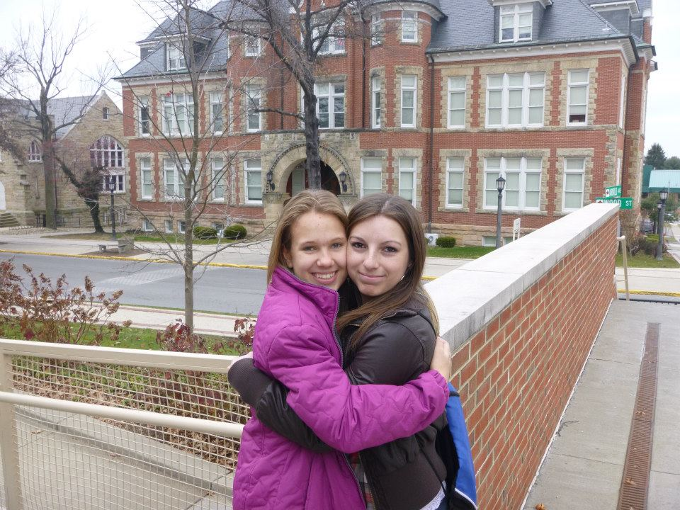

Austin and Malinda first met freshman year. They were in the same freshman computer science course and they both lived in Senat Hall.
Austin approached Malinda at a dance the first weekend of school, and introduced himself. They became good friends.
Malinda remembers Austin conforting her when she was upset, and thought "he would make a good boyfriend someday". As sophmore year started they both started having feelings
for each other but they didn't know it. The week before christmas break, they spent a lot of time together, studying for finals. Austin was going to Cleveland for a co-op in the
spring and would not be at school for the entire semester. Malinda planned to leave to go home for christmas break on friday afternoon, but ended up having to stay because of car
problems. Since their entire friend group had already went home, Austin asked Malinda to dinner and then while at dinner he asked her to go ice skating (which they didn't get
to do in NYC). They had a great time but both of them were afraid to call it a date.
Over Christmas break, they texted often. Austin messaged Malinda and recalled how great of a time he had hanging out with her. Malinda agreed.
Austin asked Malinda if she would like to do it again sometime and when Malinda said yes, he said "just the the two of us?" Malinda replied with "it's a date." Austin came
to visit her at school by suprising her. It was snowing really hard, and he had said he couldn't make it because of the road conditions. They went skiing and Austin spilled hot chocolate
all over Malinda. When they got back, they watched Forest Gump and Austin used tickling her as an excuse to put his arm around her. After the movie they kissed.
After two and a half years of dating Austin and Malinda took a trip to California to celebrate their graduation from Penn State. They went to Yosemite
National Park to stay for a few days. On the first day there, they hiked to the top of Sentinel Dome. It was the most beautiful place, either of them had every seen. At 9000 feet
above sea level, overlooking the entire park and Yosemite falls, Austin proposed. He had the ring custom made, and had carried it around in his pocket all day, waiting for the most perfect spot.
Malinda just cried at first out of pure happiness so he asked her again and then she said yes! Because of a lack of cell phone service and the time difference, they couldn't even tell their families for three days.
They are excited to spend our lives together!
I've known Malinda a while now- roughly 21 years. We spent our entire lives as best friends- playing house with Beanie Babies, catching salamanders, running around with the dog, and it felt like we were fighting more than we got along. I would lock my room and she would lay outside the door and beg me to
let her in so she could be entertained, or she would boss me around until I screamed and we both got in trouble. Despite all the fights, we always got over it, sometimes with the help of a note passed between our closets as a peace offering (they shared a wall). I always wanted to be like her, angry I couldn't play softball or be good at math like she was. We looked like twins (she hated it)
and I had to go to school being “Malinda's sister”, learning to respond to her name too. She was a tough act to follow, so it's probably a good thing we never went to the same campus for college! It was odd when she went to Behrend, when we had to get used to being apart, and she didn't really like being in college either. That changed when she met Austin, and he's pretty cool. When I first met him,
all he did was make fun of me and make fun of Malinda, so I think he's perfect for her. He would point out things we both said, or mannerisms we both had, proving how similar we were. They're both into computers and stuff and I know they're always going to make each other happy, so that makes me pretty happy too. It's not easy being 7 hours away from her, but as long as
Austin is there to mock her for me, I know I don't have anything to worry about. She's still my cool sister, but soon
I'll have a brother too, and that makes me the lucky one.
Kate Hill - Bridesmaid
Hi my name is Kaitlyn and I am Malinda's cousin! I currently live in Connecticut with my fiancé Bob and am working as a preschool teacher.
Minda has been one of my best friends since I was little. We have been through everything together, always having the other one to talk to. She has been the one I would go to for support, gossip, laughter, or to complain.
Through high school and college we always called and FaceTimed each other with important news even though we never went to the same school. Now that she is getting married some things have changed.
We both have a man in our lives that takes up a lot of our time and attention but even with that we have remain close.
Austin and Minda's relationship is one of a kind. The kind of love that you always wish for your best friend. He's a little weird, she's a little weird and they fit together perfectly! Now I get to stand up with her and support her as she promises to love and cherish Austin forever.
I am extremely lucky to have her as my cousin and he will be extremely bless to have her as his wife. "
Meg Hill - Bridesmaid
Hi!! My name is Meghan Hill and I’m from Greensburg, PA. I am Malinda’s cousin! Growing up having only two cousins (Malinda and Rachel), some may say we missed out on having a big family.
But to me, I feel like that has made us even closer. Ever since we were really little, Malinda and I have been like best friends. Cousins are meant to be best friends, and that’s how it has always been. We would always have fun when we were goofing off at Granny’s and
getting called ‘brats’ for just being too silly or when we were playing ‘house’. And when it was time to leave, we would all make a mess so we would have to stay longer to clean it all up. Some of our other best memories come from tailgating and going to Penn State games!
That is the main thing that brings our whole family together every weekend in the fall and I love that. I know the turning point for our friendship, to me, was when we went on the 60 mile Dam Ride together for the first time. We were still kind of young and it was one of the first times that we were going somewhere not as a group of cousins and
I was worried because we usually never spent that much time without our sisters. But that day was one of the best memories I have with Malinda, because the entire trip, we were laughing and joking around, and just having the most fun in the world. From then on, we looked forward to that bike ride every year with Pap Pap, and they always were a great time together.
At any family event, I am always waiting until Malinda and her family get there, because once we are all together, we just have a blast! Malinda is by far one of my very best friends and I love her so much. To be a part of this day with her is definitely a blessing.
We have always said that we will be in each other’s weddings when the days come, and now it is actually happening!
I am so happy that she has found the man of her dreams who makes her happy and treats her the way she deserves, because she deserves the best!
I cannot wait for this special day and to celebrate with Malinda and Austin! I love you guys and Congratulations!!
Amy Dewoody - Bridesmaid
 Hello my name is Amy and I am from Saegertown, PA where I work as an electrical engineer at a power distribution company.
I met Minda at Behrend when we were assigned as random roommates our freshman year in 2012. I credit my success at college to Minda because she exemplifies both a good student and an even better friend.
The initial adjustment to school was rocky, but more importantly, the amount of times we cried, ate ice cream, and shared dog pictures was the saving grace I needed to graduate.
I haven't met a better person. Even though we don't live in the same apartment, or even the same state, I cherish the memories made in apt. 808, and look forward to celebrating our friendship more, no matter how far away we are.
Although I knew Austin, I couldn't truly appreciate who he was until we were associated through Minda. Thank you, Austin, for encouraging, supporting, and loving my best friend. Your love has set the bar high, for it is evident in the smallest
of things, like your playful demeanor. I admire your drive and your passion for Minda and your work is inspiring. I am confident you two have a lifetime of happiness filled with coding, milkshakes, health, and love.
I am thankful for the influence you both have had on me, and am honored to be a part of your day.
Hello my name is Amy and I am from Saegertown, PA where I work as an electrical engineer at a power distribution company.
I met Minda at Behrend when we were assigned as random roommates our freshman year in 2012. I credit my success at college to Minda because she exemplifies both a good student and an even better friend.
The initial adjustment to school was rocky, but more importantly, the amount of times we cried, ate ice cream, and shared dog pictures was the saving grace I needed to graduate.
I haven't met a better person. Even though we don't live in the same apartment, or even the same state, I cherish the memories made in apt. 808, and look forward to celebrating our friendship more, no matter how far away we are.
Although I knew Austin, I couldn't truly appreciate who he was until we were associated through Minda. Thank you, Austin, for encouraging, supporting, and loving my best friend. Your love has set the bar high, for it is evident in the smallest
of things, like your playful demeanor. I admire your drive and your passion for Minda and your work is inspiring. I am confident you two have a lifetime of happiness filled with coding, milkshakes, health, and love.
I am thankful for the influence you both have had on me, and am honored to be a part of your day.
Brianna Kelleher - Bridesmaid
My name is Brianna and I'm in my 12th grade year of high school.
I'm gladly able to say that Austin's my brother. We've have been so close and I am happy he has found someone as sweet a Malinda. I'm also glad to know
I've been able to get to really know Malinda these past few years and can share so many memories with her.
I'm very excited to be able to be part of the wedding and be with these two on a special day.


{kind=link}
{kind=link}
{kind=link}
{kind=link}
{kind=link}
{kind=link}
{kind=link}